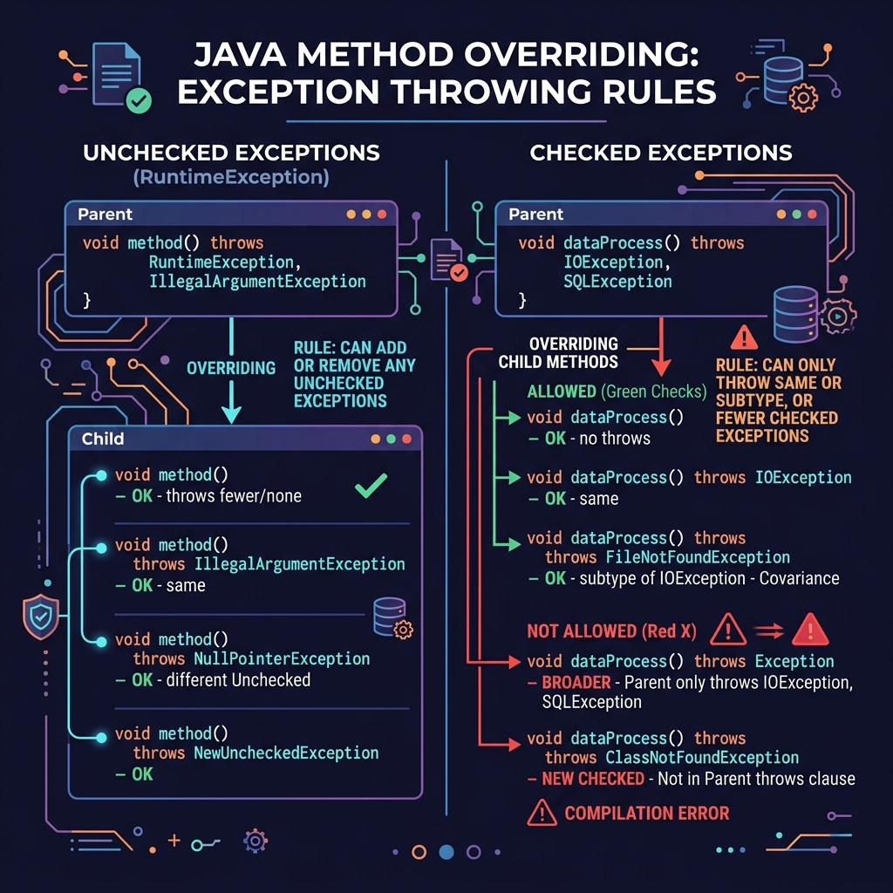

In Java inheritance, when a subclass overrides a parent class method, it must adhere to strict signature rules. In addition to return-type covariance, Java enforces specific compiler rules on what exceptions the subclass method is allowed to throw.
In this guide, we will break down these overriding rules for checked vs. unchecked exceptions using a practical parent-child code example.

Imagine a business contract between a parent contractor and a client:
- The parent contractor promises to deliver a house and warns that minor delays (NullPointerException - unchecked) might occur.
- If a subcontractor takes over (method overriding), they are bound by the parent's contract. They cannot suddenly declare: "We might delay the build by 3 years due to custom import permits (checked IOException)."
- The subcontractor is allowed to make stricter promises (throw no exceptions, or only throw subclasses of the parent's declared exceptions), but they can never impose wider risks on the client.
Rule 1: Superclass Method Declares No Exceptions
If the parent class method does not declare any exception in its signature:
- The overridden subclass method cannot declare checked exceptions (e.g.
IOException). Doing so will result in a compile-time error. - However, the subclass method is allowed to declare unchecked exceptions (e.g.
NullPointerExceptionorArithmeticException).
Rule 2: Superclass Method Declares a Checked Exception
If the parent class method declares a checked exception in its signature:
- The overridden subclass method can declare the same exception, a subclass of that exception (stricter rule), or **no exception** at all.
- The subclass method cannot declare a broader parent exception or a completely unrelated checked exception.
Code Walkthrough
Let's check this in action. We have a parent class OverridenClass which declares a method that throws no exceptions, and a subclass OverridingExample which overrides it:
class OverridenClass {
OverridenClass msg() { // Declares no exceptions
System.out.println("parent");
return this;
}
}
public class OverridingExample extends OverridenClass {
// Overridden method - OK to declare unchecked NullPointerException!
@Override
OverridingExample msg() throws NullPointerException {
System.out.println("TestExceptionChild");
return this;
}
public static void main(String args[]) {
OverridenClass p = new OverridingExample();
p.msg(); // Triggers the child overridden method
}
}If we modified the child method signature to be OverridingExample msg() throws IOException, the compiler would fail instantly because IOException is checked and the parent method is clean.
Conclusion
To summarize, a subclass overridden method:
- Can throw any unchecked exception.
- Can only throw checked exceptions that are narrower than (subclasses of) the checked exceptions declared in the parent method signature.